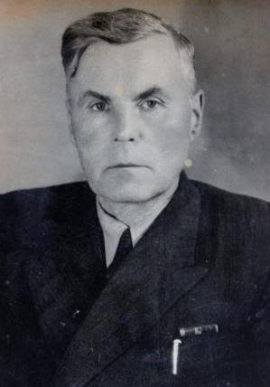

Історія ліцею
Коростенський міський ліцей (до 01.08.2010 р. Коростенська загальноосвітня школа І-ІІІ ступенів №6) має славну історію. 1944 рік – це рік народження школи, адже перші учні сіли за парти саме у вересні 1944 р. після визволення Коростеня від фашистських загарбників. На жаль, учнів було небагато. В класах стояли саморобні довгі столи та лави. У реєстрі відновлених шкіл освітній заклад значився як неповна середня школа №43 Південно-Західної залізниці. У 1946 році школа стала 7-річкою. Працювало 25 вчителів, які були колишніми фронтовиками. У школі навчалося 250 учнів. Заняття відбувалися у дві зміни. .
Директором був І. І. Гудзь.

Перший випуск відбувся у 1947 році.
У 1953 році була побудована двоповерхова школа 10-річка. У будівництві брали участь діти, батьки, вчителі. Мешканці мікрорайону приносили саджанці дерев, які учні посадили на шкільному подвір’ї. Свято першого дзвоника перетворилося в свято радості, тому що, у порівнянні зі старим, приміщення новозбудованої школи було просторим і по-справжньому сучасним. Перший випуск школи-десятирічки відбувся у 1956 році
.jpg)
З 1958 року керівником школи стає В.С.Вишняк.
У 1960 р. залізничну школу було переведено у відомство Міністерства освіти УРСР, вона стала ЗОШ № 6.
.jpg)
З 1978-1980 роки школу очолював Климчук Л. О.
.jpg)
З 1980-1982 роки – директор Довженко Борис Юхимович.
.jpg)
З 1982-1989 роки школу очолював Калашник М. Д.
Саме при Миколі Даниловичу було побудовано нове триповерхове приміщення школи. Шкільний комплекс складався зі старої будівлі, в якій навчалися учні початкових класів, і нового приміщення, де навчалися учні 5-10 класів.
.jpg)
З 1989-1994 роки школу очолював Нишпор Петро Іванович.
У школі навчалося 808 учнів. З 1992 року навчальний заклад почав працювати в межах експериментальної програми Міністерства освіти «Педагогічна підтримка розвитку дитини». На базі школи було створено класи «вирівнювання», в яких навчалися учні молодших класів, яким важко давалася типова навчальна програма. Вищеназвана категорія дітей навчалася за подовженою програмою, використовувалася методика «інтелектуальної реабілітації». Заняття класів «вирівнювання» сприяли тому, що у середній ланці програму засвоювали досить вдало як учні звичайних класів, так і ті, хто навчався в експериментальних класах.
Було створено зали: мистецтв, культури та побуту Полісся, екологічний, шкільну картинну галерею. У витоків створення стояли Белько Г.Ю. – заступник директора з виховної роботи, Соколова Л.П. – заступник директора з навчально-виховної роботи, Тагун Л.Є. – вчитель біології. Експонати залу-музею збирали учні, вчителі, батьки. Значний внесок у народознавчу роботу та збір етнічних експонатів здійснили вчителі Поліщук О.П., Вишневська С.П., Литвинова Н.С., Предчук В.В., Ананченко С.П., Тертична Н.А., Козаренко С.В.
.jpg)
Галерея мистецтв
.jpg)
Екологічний зал
.jpg)
Зал-музей культури і побуту Полісся
.jpg)
З 1994-1997 роки директором школи була Соколова Людмила Петрівна.
У школі працювали класи з поглибленим вивченням окремих предметів (передумова профільного навчання), продовжувалися традиції, які набула школа у попередні роки
.jpg)
З 1998-2004 роки школу очолював Говенко Іван Володимирович
.jpg)
З 2004-2010 роки школу очолював Ходаківський Віктор Васильович.
У школі було введено навчання за такими профілями: інформаційно-технологічний, природничий, художньо- естетичний.
Збільшилася кількість гуртків, клубів за інтересами, у яких мали змогу займатися учні у позакласний час.
Учасники шкільної художньої самодіяльності здобували призові місця у мистецьких оглядах –конкурсах. Танцювальний учнівський гурт «Сучасні ритми» брав участь у Всеукраїнському хореографічному конкурсі ім. Вірського і отримав диплом ІІ ступеню.
З 2005 року у школі працювали курси комп’ютерної грамотності як для підлітків, так і для вчителів, що сприяло значному розвитку навичок володіння комп’ютером як дітей, так і дорослих.
.jpg)
З листопада 2010 року навчальний заклад очолювала Кульбіда Наталя Леонідівна.
У 2014 році з метою удосконалення підготовки учнів до ЗНО з української мови та літератури було введено філологічний профіль навчання.
.jpg)
З 2016 року міський ліцей знову очолює Ходаківський Віктор Васильович.